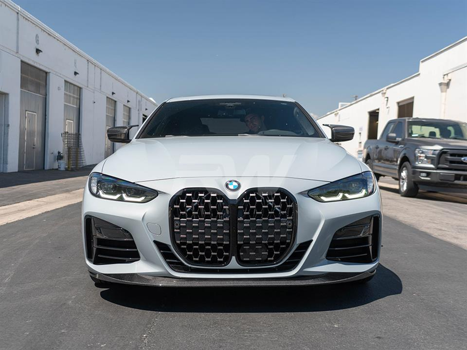

BMW G22
The second-generation 4 Series (2020 - Present)

Car Specifications
- Engine Options: 2.0L Inline-4, 3.0L Inline-6
- Power: 184 - 510 hp
- Torque: 300 - 650 Nm
- Transmission: 8-speed automatic
- Top Speed: 250 km/h (155 mph)
- 0-100 km/h: 3.9 seconds (M4)
- Fuel Economy: 5.9 - 9.0 L/100 km (40 - 26 mpg)
- Production Years: 2020 - Present
- Body Style: 2-door Coupe, 2-door Convertible, 4-door Gran Coupe
- Drive Type: Rear-Wheel Drive, All-Wheel Drive (xDrive models)
- Weight: 1,500 - 1,900 kg
About the BMW G22
The BMW G22 represents a modern evolution of the 4 Series with a bold new design, highlighted by the large kidney grille. It offers an enhanced driving experience with cutting-edge technology and improved aerodynamics.
With a focus on performance, luxury, and efficiency, the G22 delivers an exceptional balance of sportiness and sophistication.
Image Gallery


Key Features
- Performance: The M4 variant delivers top-tier performance and handling.
- Design: A striking coupe design with the iconic vertical kidney grille.
- Technology: Advanced driver assistance systems, iDrive 7, and a digital cockpit.
Technical Information
The BMW G22 features innovative engineering and high-performance engines:
Engine Codes and Iterations
- B48: 2.0L Inline-4, turbocharged, used in 420i, 430i.
- B58: 3.0L Inline-6, turbocharged, used in 440i, M440i.
- S58: 3.0L Inline-6, twin-turbo, used in the M4, up to 510 hp.
Conclusion
The BMW G22 pushes the boundaries of coupe design and technology, offering a thrilling driving experience paired with unmatched luxury and innovation.